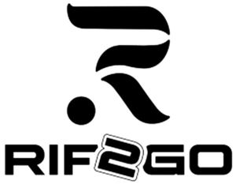

Trade Mark Journal No.2025/014 4 April 2025
WO0000001846494 (5,34)
Office of origin: Ukraine
Date of International Registration:9 January 2025
Date of designation in the UK:
9 January 2025

International priority date claimed: 19 December 2024
(Ukraine)
- Class 5
- Albumin dietary supplements; alginate dietary supplements; tobacco-free cigarettes for medical purposes; vitamin preparations; dietetic substances adapted for medical use; dietetic foods adapted for medical purposes; dietary supplements for human beings; mineral dietary supplements; plant extracts, other than essential oils, for pharmaceutical purposes; herbal extracts, other than essential oils, for medical purposes; tobacco extracts [insecticides]; nicotine gum for use as an aid to stop smoking; cannabidiol for medical use; vitamin supplement patches; nicotine patches for use as aids to stop smoking; pastilles for pharmaceutical purposes; nutritional supplements; cannabis for medical purposes; tetrahydrocannabidinol [THC] for medical use; smoking herbs for medical purposes; medicinal herbs; medical preparations from hemp extract; cannabidiol oil for medical purposes; dietary supplements containing cannabidiol oil; pouches and pads containing nicotine for use as aids to stop smoking; herbal dietary supplements; vitamin and mineral medicinal drinks; medicinal preparations fortified with vitamins and minerals in pouches for oral use; food supplements, food substitutes for medical purposes used to boost energy; tobacco substitutes for medical purposes; liquid herbal extracts, other than essential oils, and herbal preparations in capsules for medical purposes; nicotine-free snus for medical purposes; transdermal patches.
- Class 34
- Flavourings, other than essential oils, for use in electronic cigarettes; flavourings, other than essential oils, for tobacco; oral vaporizers for smokers; tobacco jars; chewing tobacco; pouches for tobacco; pocket machines for rolling cigarettes; liquid solutions for use in electronic cigarettes; cigarettes; electronic cigarettes; cigarettes containing tobacco substitutes, not for medical purposes; cigarette paper; cigarette filters; cigars; cigarillos; cigar cases; snuff boxes; herbs for smoking; tobacco; snuff; tobacco products for the purpose of being heated; devices for heating tobacco for the purpose of inhalation and their parts (smokers' articles); tobacco substitutes for the purpose of inhalation, not for medical purposes; nicotine-containing tobacco-free pouches, other than for medical purposes.
Faradj Giliadov
Representative: Ilarion Tomarov, VASIL KISIL & PARTNERS LAW FIRM,, 17/52A Bohdana Khmelnytskoho Str., Kyiv 01054, UKRAINE